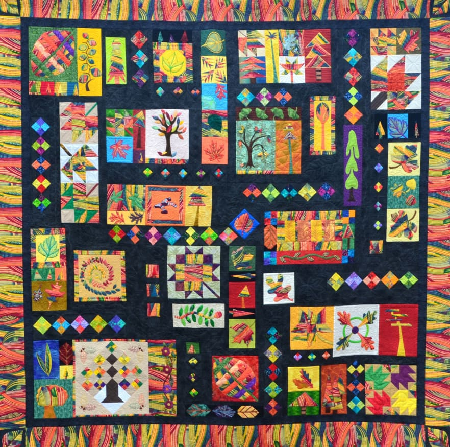
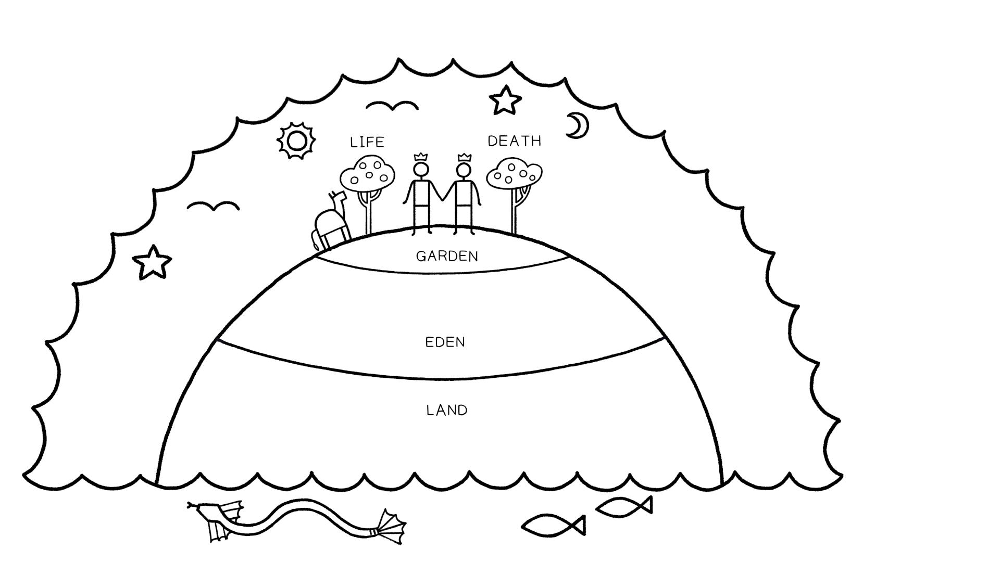
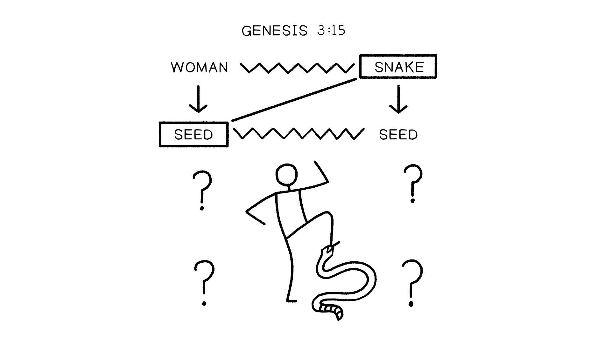
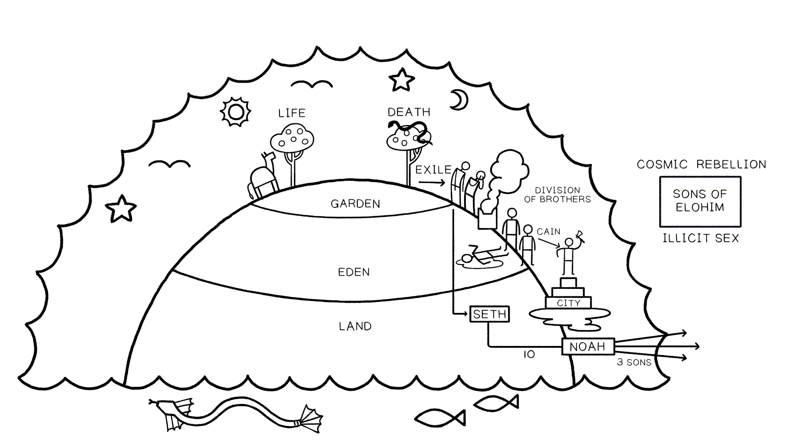
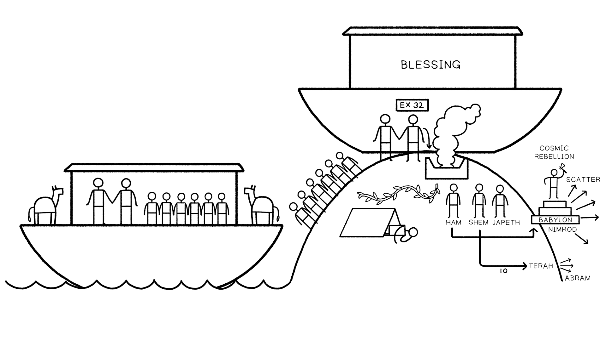

The Flood Story in the Hebrew Bible
Key Takeaways
- The Hebrew Bible is like a family quilt. It is a collection of narratives and poems from all periods of
- ancient Israelite history that have been curated and assembled into a literary design shape in order to tell a unified story. Jesus understood the flood story as a pattern—a theological category to talk about when God
- overthrows the corrupt power systems of our world. The biblical authors designed the stories of Genesis 6-11 to address the main issues of concern at work
- in the TaNaK, not our modern concerns.
The Hebrew Bible as a Family Quilt

A quilt is made of many preexisting materials, consisting of individual pieces (like the Eden story or the
Abraham stories) or sub-collections of pieces (the laws at Mount Sinai, the David stories, or the Psalms) or entire books (like Ruth or Esther). These earlier materials could be incorporated into the collection as they
stood or editorially reshaped to fit the new context. But—and this is the key point—it is this new overall context of the final quilt that gives each individual piece its meaning when viewed in light of the whole. Regardless of the meaning of any individual piece outside of or before its incorporation into the quilt, the entire context of
the quilt is now the proper frame of reference for understanding every smaller piece.
In the case of Genesis 6-11 (the focus of this class), we must ask ourselves this at every step of our reading:
What is the meaning of Genesis 6-11 that is intended by the authors who framed the final shape of the TaNaK, as far as we can discern it? For the authors, Genesis 1-11 formed an introduction to the entire TaNaK,
containing the basic themes, vocabulary, and plot elements that would be developed throughout the rest of the collection.
| The Many Potential Contexts of the Story of Noah and the Flood In our modern cultural setting, the Noah story has been made to speak to many topics that the biblical authors did not mean to address. We must be vigilant to distinguish between asking what Genesis 6-11 means within the context of the TaNaK versus what it means for other areas of interest. The difference is one of intention. The biblical authors actually intended the stories to address the main issues of concern at work in the TaNaK, not our modern concerns. Genesis 6-11 may have significance for how we think about other topics in light of the biblical perspective, but we should not mistake this for the meaning of Genesis 6-11 in its native context. | ||||
|---|---|---|---|---|
| Meaning | Significance | |||
| Genesis 6- 11 | TaNaK | Introduction to Geology | A Primer on Animal Biology | Ancient Shipbuilding |
| The Meaning Versus Signficance of Genesis 6-11. Created by Tim Mackie for BibleProject Classroom: Noah to Abraham (2020). | ||||
| Reflection Question According to Jesus, what is the Hebrew Bible (the Torah, the Prophets, and the Psalms) all about? |
| 3: 1-11 Session The Design of Genesis | ||||
|---|---|---|---|---|
| Key Takeaways To understand a story’s meaning, it is crucial to pay attention to its literary design shape. Knowing good and evil is about moral discernment and taking the authority to define good and bad by your own wisdom. In response to the rebellion of his appointed rulers and the outcry of innocent blood, God will allow the cosmos to sink back into chaos. But in his mercy, he rescues a remnant to share his world with so they can rule on his behalf. The Story of Noah and the Flood In Genesis 1-11 The Noah story in Genesis 6-11 fits within a larger pattern at work in Genesis 1-11. Chapters 1-5 play out a cycle of themes, and chapters 6-11 replay and develop the cycle. | ||||
| Unit | Theme | |||
| A1 | 1:1-2:3 Creation of sacred cosmos from chaos waters / human image of God / blessing / fruitful and multiply | Creation and Blessing | ||
| B1 | 2:4-3:24 Mountain-garden temple / sin, nakedness, curse, exile | Failure | ||
| B2 | 4:1-16 Next generation sins / brothers divide / firstborn not chosen / curse, exile | Failure of Next Generation | ||
| C1 | 4:17-26 Adam to Lemek: 7 generations + 3 sons / city of Cain / murder / 70 x 7 | Non-Chosen | ||
| C2 | 5:1-32 Adam to Noah: 10 generations + 3 sons / promise of comfort | Chosen | ||
| B3 | 6:1-8 Cosmic rebellion in Heaven and Earth: sons of God invade the land, leading to the flood | Cosmic Rebellion | ||
| Macro-Design of Genesis 1-11. Created by Tim Mackie for BibleProject Classroom: Adam to Noah (2020). |
| Unit | Theme | |||||
|---|---|---|---|---|---|---|
| A2 | 6:9-9:19 De-creation by chaos waters and recreation / Noah as new humanity / blessing / fruitful and multiply | Re-Creation and Blessing | ||||
| B1 | 9:20-21 Garden vineyard / sin, nakedness | Failure | ||||
| B2 | 9:22-27 Next generation sins / brothers divide / firstborn not chosen / curse, scattering | Failure of Next Generation | ||||
| C1 | 10:1-32 Noah + 3 sons / 7 generations to Peleg / City of Babylon and Assyria / 70 nations | Non-Chosen | ||||
| B3 | 11:1-9 Cosmic rebellion in Babylon: sons of Adam invade the heavens, leading to the scattering | Cosmic Rebellion | ||||
| C2 | 11:10-26 Shem to Abram: 10 generations / 3 sons | Chosen | ||||
| A3 | 12:1-9 Abram as new humanity / blessing / fruitful and multiply | Re-Creation and Blessing | ||||
| Macro-Design of Genesis 1-11. Created by Tim Mackie for BibleProject Classroom: Adam to Noah (2020). | ||||||
| These symmetrical patterns are created by the dense repetition of key words that signal the thematic arguments at work in the narrative and show important comparisons. | ||||||
| “[T]he episodes culled from Hebraic traditions of early history were conceived in two matching sequences (Genesis 1-6 and 6-11) ... Each one of these sequences describes the manner in which humanity was removed progressively from the realm of God [i.e., the garden of Eden and flood], in which he initiated fraternal (and hence human) strife [i.e., Cain and Abel, Noah’s sons], then divided into tribal and national groupings [Cainite and Shemite genealogies and the Table of Nations], then attempted to restore his divine nature or gain access to the divine realm, but was foiled in this by God [sons of God and Tower of Babel]. In each case, it is the consequence of this hubris which launched God into a decision to focus his relationship with humanity on one person. In the first case [Genesis 6], God destroys mankind, allows it to survive through his choice of Noah, but almost immediately recognizes (Gen. 8:21) that His measure was a shade too drastic ... [In the second case,] [d]istressed by man’s repeated attempt to unbalance the cosmological order, and no longer allowing Himself the option of totally annihilating mankind, God finally settles on one individual, uproots him from his own kin, and promises him prosperity and continuity in a new land.” Adapted from Sasson, Jack (1980). “The 'Tower of Babel' as a Clue to the Redactional Structuring of the Primeval History.” KTAV Publishing House. 218-219. | ||||||
| Genesis 1-3 as the Introduction to the TaNaK | ||
|---|---|---|
| “When understood as the introduction to the Torah and to the TaNaK as a whole, Genesis 1-3 intentionally foreshadows Israel’s failure to keep the Sinai covenant as well as their exile from the promised land in order to point the reader to a future work of God in the “last days.” Adam’s failure to “conquer” (Gen. 1:28) the seditious inhabitant of the land (the serpent), his temptation and violation of the commandments, and his exile from the garden is Israel’s story in miniature ... Just as it was in the beginning ... so it will be in the end. In the conclusion to the Pentateuch, Moses presents Israel’s future apostasy and exile as a certainty (see Deut. 30:1-10) ... This inclusion of pessimism at both ends of the Pentateuch with respect to human abilities to “do this and live," not only supplies the context for interpreting the Sinai narrative, but also provides the rationale for the need of a new work in the "last days,” whereby God will heal the human heart. Moreover, the groundwork is also laid for the expectation of another “Adam” (a future priest king) to arise from among the people of Israel who will fulfill the creation mandate in the last days. In other words, Genesis 1-3 ... forthrightly prepares the reader to expect that Israel will fail its covenant with God, and so to wait expectantly in exile for a new work of God in the last days.” Adapted from Postell, Seth (2011). Adam as Israel: Genesis 1-3 as the Introduction to the Torah and Tanakh. Pickwick Publications. | ||
| Genesis 1-11 Illustrated The pattern of themes begins with God’s ideal for creation. Humanity lives at peace with the animals and rules as God’s representatives. |

Ideal Creation. Illustration created by Tim Mackie for BibleProject Classroom: Noah to Abraham (2020).
After the failure in the garden, God promises that though there will be conflict between the seed of the woman and the seed of the snake, someday one of the woman’s descendants will triumph over the snake.

Genesis 3:15 Snake Crusher. Created by Tim Mackie for BibleProject Classroom: Noah to Abraham (2020).
Still, the failure of humanity leads to exile from the garden. The failure and rebellion of the following
generations lead to an escalation of violence and bloodshed.

From Adam to Noah’s Three Sons. Created by Tim Mackie for BibleProject Classroom: Noah to Abraham (2020).
God’s judgment and mercy are bound together as he rescues Noah and his family through the chaos waters of the flood. Noah offers a sacrifice on the high place in response to God’s goodness, but the cycle of folly,
division, and violence begins anew.

From Noah to Abraham and Nimrod. Created by Tim Mackie for BibleProject Classroom: Noah to Abraham
- (2020).
Reflection Question
What event from earlier in Genesis does the flood undo?